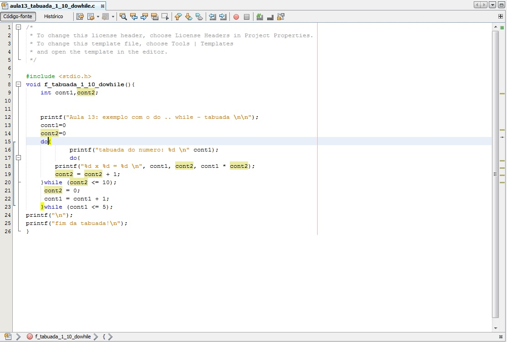

Algoritmo
O objetivo desta materia é de iniciar a formação em programação de computadores por meio de uma linguagem facilitadora do aprendizado de algoritmos, preferencialmente alguma uma linguagem de amplo emprego no mercado.
A seguir teremos a explicação de duas estruturas usadas na linguagem C
Estrutura Seletiva (Else e if)
As estruturas seletivas são umas das estruturas base de qualquer linguagem de programação que desempenha um papel importante no algoritmo. Essa estrutura é responsável pela tomada de decisão de um programa, deixando-o mais "inteligente".
As estruturas seletivas se apóiam no conceito booleano, no qual apenas dois resultados são possíveis: verdadeiro ou falso.
Geralmente, descritos como if e else em muitas linguagens de programação, sua síntase também se assemelha muito.
Para a estrutura seletiva if determinar se algo é verdadeiro ou falso, ela utiliza operadores lógicos como maior (>), menor ou igual (≤), etc...
Estrutura Repetição (While e Do)
Juntamente com as estruturas seletivas, as estruturas de repetição ou iteração são de crucial importância para a programação do algoritmo.
As estruturas de repetição ou iteração nos possibilitam executar o mesmo trecho de código várias vezes seguidas, enquanto um dado critério não é satisfeito. As estruturas de repetição ou iteração são, comumente, dadas pelas palavras while ou for.
Qualquer estrutura, seja for ou while, funciona com 1 variável que chamamos de sentinela. Essa variável irá ditar quando o programa deverá sair da repetição e geralmente tem 3 características:
1°. Qual valor esta variável irá iniciar; 2°. Como esta variável terá seu valor modificado para que chegue ao valor final; 3°. Qual valor esta variável deve atingir para que pare a repetição.
No caso, a variável de controle ou sentinela sempre deverá ter essas características ou poderá ocorrer um erro que chamamos de loop infinito. Isso ocorre por causa de erro de lógica, no qual a variável sentinela nunca chega ao seu resultado final.